Once the connection property has been set, you can now start forming your SQL queries. Forming queries can be categorized in two types, queries that modify data to the database (INSERT, UPDATE, DELETE),
or the queries that fetch data from the database (SELECT). We will discuss these two categories one by one.
Update Queries
To asynchronously modify data in our table , we will use the function Update data from Query Async.
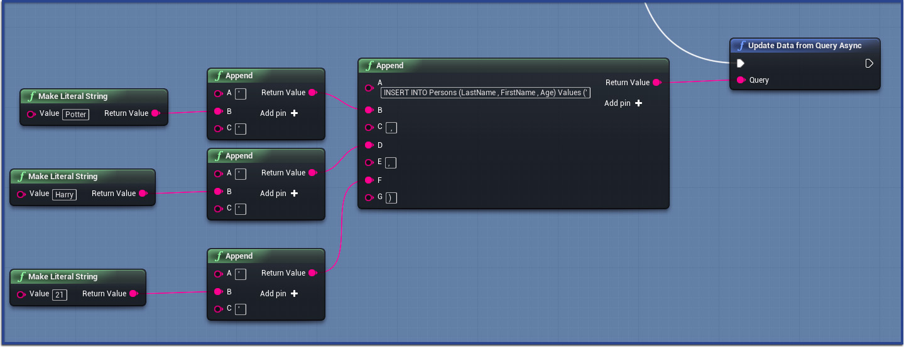
After calling the Update function , you need to periodically listen to the function Check Query Execution State to find out the current state of your function.
Here also you can use Gate within the Tick function, which should be opened after the function Update data from Query Async is called.
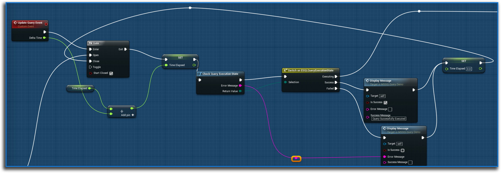
| Query Execution State |
Description |
| Executing |
The query is still being executed. |
| Success |
The query has been successfully executed. |
| Failed |
The query execution has failed. This generates error message as string output in the Check Query Execution State function. |
If you would like to update data synchronously, you can call the function Update data from Query which takes a string input where we have to enter our query and executes the query in the database.
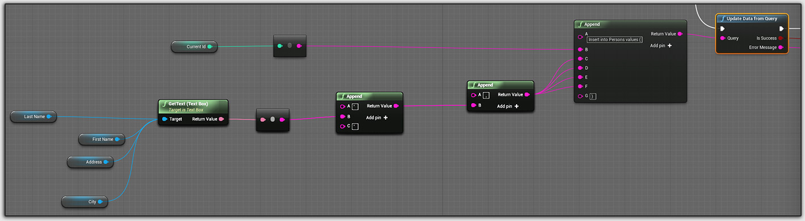
Select Queries
To select data asynchronously, you need to first call the function Select Data from Query Async which takes a string input where we have to enter our query and fetches the result from the database.
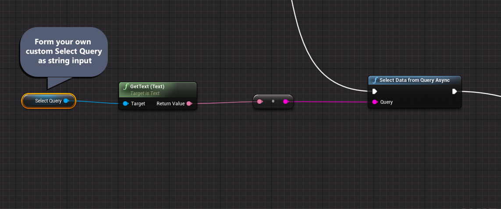
Once you called Select Data from Query Async, you need to periodically listen to the
function Check Query Execution State to find out the current state of your query execution.
To select the data once the query execution is successful, call the function Get Selected Table.
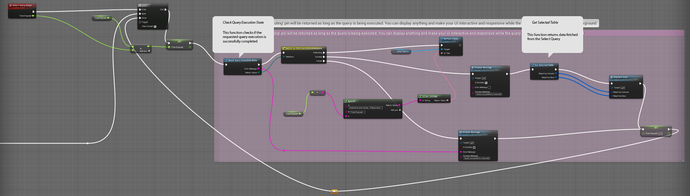
| Output Name |
Description |
| Result By Column |
This will return an array of structured variable called MSSQLDataTable. This represents a column in the table and contains two properties,
ColumnName and ColumnData.
ColumnName
ColumnName contains the header name of the column of the current instance of our initial array that we get by executing our select query.
If you want to display data of a specific column, you can use this variable to match the column name.
ColumnData
ColumnData is an array of string consisting of all the elements of a given column. So you can easily set up a
for-loop here to get all the elements of a particular column iteratively.
|
| Result By Row |
This contains an array of structured variable called MSSQLDataRow. This structure contains an array of string that represents values of an entire row.
So the number of elements in this string array equals number of columns, and number of elements in the Result by Row array equals number of rows in the output of the Select query.
|
Below images display an example of how we can use Result By Row and Result By Column structures to store and display selected data retrieved from the server to our UE4 UI,
as part of UMG widget.
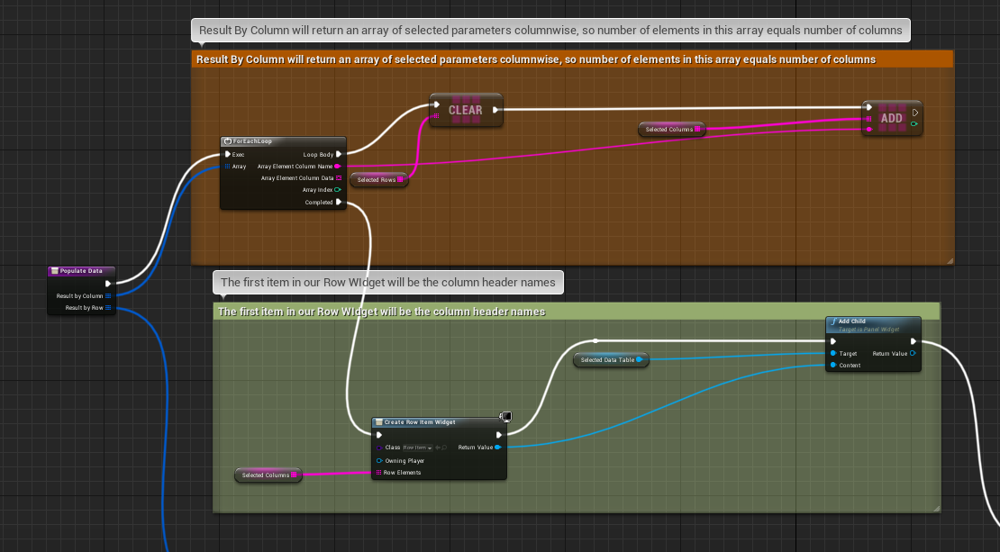
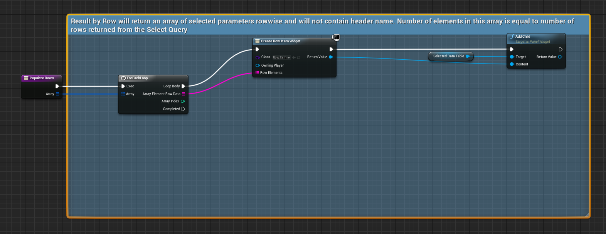
If you would like to select data synchronously, you can call the function Select data from Query which takes a string input where we have to enter our query ,
executes the query in the database. and returns the selected data as Result By Column and Result By Row format.
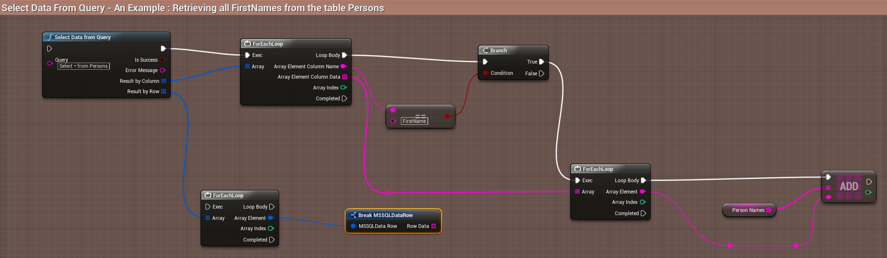
Update Images
To save an image to our table, we first need to browse for an image from our desktop. As of now, you cannot directly save UE4 Textures to your database.
Instead, you can directly browse for an image of common types via Blueprints, by calling the function called Browse File.
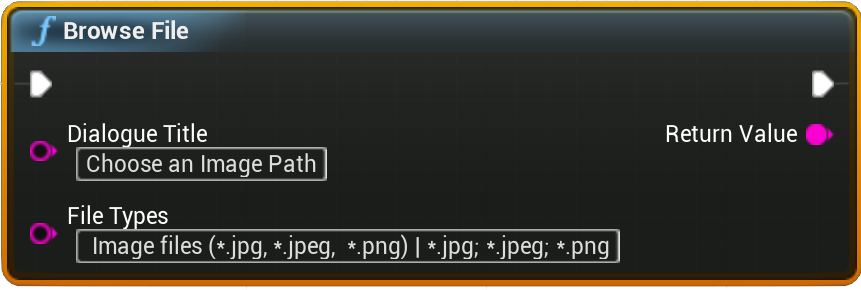
This function will bring up a File Browser dialogue. On selecting the image file and clicking OK, the dialogue box will close and the function returns the file path.
You may have your separate ways of retrieving image path from your hard drive, so this function is pretty much optional.
Once we have our image file path, we need to fire the function called Update Image from Query that will update the image to the server.
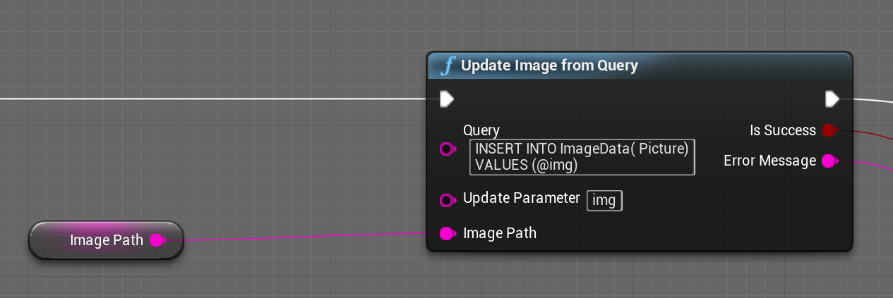
| Inputs |
Description |
| Query |
Here we enter our query. So if we want to insert an image in our Picture column, we need to enter it like this:
INSERT INTO ImageData( Picture)
VALUES (@img)
If we want to insert values in other columns, we can do that as well.
INSERT INTO ImageData( ID , Picture)
VALUES (0, @img)
|
| Update Parameter |
This will contain the variable name which should be replaced by our image. In the query above, we are using the word @img.
This is a common way of inserting dynamic data in SQL server, and you must be familiar with it if you have hands on experience in ADO.NET.. So this input will take the same parameter as input,
without the @. symbol, to help the program determine what variable is being used to represent image variable. So here we need to enter img., as shown in the picture above. |
| Image Path |
Here we are providing the image file path that we have received from the previous section. |
Select Images
To select an image from SQL Server, we simply need to call the function called Select Image from Query and enter our selection query here.
You need to remember that you can select only one image at a time, so make sure your selection query only fetches a single image and nothing else. For example, when your table has a multiple rows, you cannot write Select Picture
from ImageData as that will fetch multiple values. Instead, you need to write something like:
Select Picture from ImageData Where ID=3

This function returns a Texture2D format, which you can use to display the image in your game.
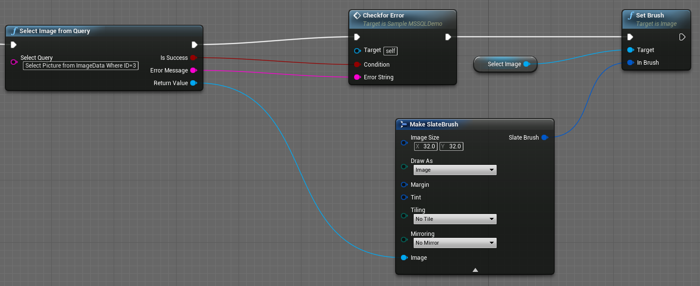